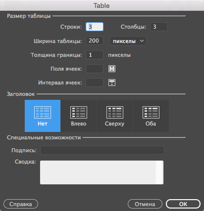
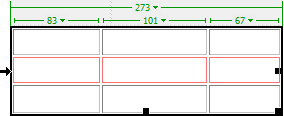
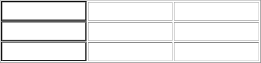
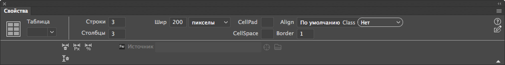
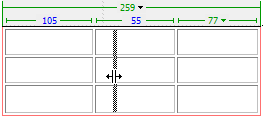
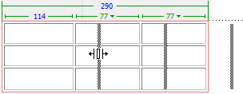
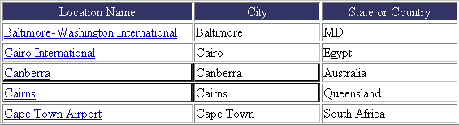
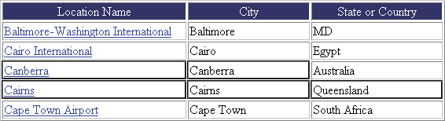

Узнайте, как использовать таблицы для отображения содержимого веб-сайта, а также как разделять и объединять ячейки или импортировать и экспортировать табличные данные.
Таблицы — это мощный инструмент представления табличных данных и верстки текста и графики на HTML-страницах. Таблица состоит из одной или нескольких строк, каждая строка — из одной или нескольких ячеек. Хотя столбцы обычно не описываются в HTML-коде в явном виде, Dreamweaver позволяет оперировать ими так же, как строками и ячейками.
При выборе таблицы или помещении в нее курсора вставки Dreamweaver отображает ширину таблицы и каждого из ее столбцов. Рядом со значениями ширины отображаются стрелки меню заголовка таблицы и заголовков столбцов. С помощью этих меню можно быстро получить доступ к стандартным командам по работе с таблицами. Отображение значений ширины и меню можно включить или отключить.
Если значение ширины для столбца или таблицы не отображается, это значит, что соответствующее значение не задано для таблицы или столбца в HTML-коде. Если отображаются два значения, это значит, что видимая в представлении «Дизайн» ширина не соответствует значению ширины, заданному в HTML-коде. Это происходит при изменении размера таблицы путем перетаскивания ее за правый нижний угол или при добавлении в ячейку содержимого с большим размером, чем заданное значение ширины.
Например, если ширина столбца установлена равной 200 пикселам, при добавлении содержимого, растягивающего ширину столбца до 250 пикселов, для столбца отображаются два значения: «200» (значение ширины, заданное в коде) и значение в скобках «(250)» (видимая на экране ширина столбца).
Примечание.
Кроме того, макеты страниц можно создавать с помощью CSS-позиционирования.
Очередность форматирования таблиц в HTML
При форматировании таблиц в представлении «Дизайн» можно установить свойства как для всей таблицы, так и для выбранных строк, столбцов или ячеек. Если для свойства, например цвета фона или выравнивания, установлено одно значение для целой таблицы, а для отдельных ячеек другое, то форматирование ячеек будет иметь приоритет над форматированием строк, а последнее, в свою очередь, над форматированием таблицы.
Форматирование таблицы имеет следующий порядок очередности:
Например, если установить для какой-то ячейки синий цвет фона, а затем желтый цвет фона для всей таблицы, то синяя ячейка не станет желтой, так как форматирование ячейки имеет приоритет над форматированием таблицы.
Примечание.
Когда задаются свойства всего столбца, Dreamweaver изменяет атрибуты тега td для каждой ячейки столбца.
О разбиении и объединении ячеек таблицы
Объединить можно любое число смежных ячеек (если выделенные ячейки образуют линию или прямоугольник). В результате получится одна ячейка, охватывающая несколько столбцов или строк. Ячейку можно разбить на любое число строк или столбцов независимо от того, была ли она получена ранее путем объединения. Dreamweaver автоматически изменяет структуру таблицы (добавляя необходимые атрибуты colspan или rowspan) для создания указанного размещения.
В приведенном ниже примере ячейки в середине первых двух строк были объединены в одну ячейку, охватывающую две строки.
Объединенные ячейки
Вставка таблицы и добавление содержимого
Новую таблицу можно создать с помощью панели «Вставка» или одноименного меню. Затем в таблицу добавляются текст и изображения таким же путем, как это делается вне таблицы.
Примечание.
При вставке в пустой документ курсор можно расположить только в его начале.

Создание таблицы
Задает число строк таблицы.
Задает число столбцов таблицы.
Задает ширину таблицы в пикселах или в процентах от ширины окна браузера.
Задает толщину рамки таблицы в пикселах.
Задает число пикселов между смежными ячейками таблицы.
Примечание.
Если значения толщины границ или интервала между ячейками и их полей не заданы явно, то в большинстве браузеров толщина границ таблицы и поля ячеек будут равны 1, а интервал между ячейками — 2. Чтобы таблица отображалась в браузерах без границ, полей и интервалов, присвойте параметрам «Поля ячеек» и «Интервал ячеек» значение 0.
Задает число пикселов между рамкой ячейки и ее содержимым.
Не позволяет задавать заголовки столбцов или строк таблицы.
Делает первый столбец таблицы столбцом заголовков, в котором вводится заголовок для каждой из строк таблицы.
Делает первую строку таблицы строкой заголовков, в которой вводится заголовок для каждого из столбцов таблицы.
Позволяет вводить заголовки как для столбцов, так и для строк таблицы.
Примечание.
Рекомендуется использовать заголовки в том случае, если посетители веб-сайта используют программы чтения с экрана. Программы чтения с экрана считывают заголовки и помогают пользователям ориентироваться в информации таблицы.
Указывает заголовок таблицы, который отображается вне самой таблицы.
Содержит описание таблицы. Программы чтения с экрана считывают текст сводки, но в браузере он не отображается.
В Dreamweaver можно импортировать табличные данные, созданные в другой программе (например, в Microsoft Excel) и сохраненные в формате текста с разделителями (которыми могут быть символы табуляции, запятые, двоеточия или точки с запятой), а затем отформатировать эти данные как таблицу.
Кроме того, можно экспортировать табличные данные из Dreamweaver в текстовый файл, где содержимое смежных ячеек будет разграничено разделителем. В качестве разделителей можно использовать запятые, двоеточия, точки с запятой или пробелы. При экспорте таблицы экспортируется вся таблица. Нельзя выбрать для экспорта часть таблицы.
Примечание.
Чтобы экспортировать только часть данных из таблицы, например первые шесть строк или первые шесть столбцов, скопируйте ячейки с нужными данными, вставьте их в любом месте вне таблицы (при этом будет создана новая таблица) и экспортируйте эту новую таблицу.
Имя файла для импортирования. Чтобы выбрать файл, нажмите кнопку «Обзор».
Разделитель, используемый в импортируемом файле.
Если выбрать значение «Другой», справа от всплывающего меню появится текстовое поле. Введите разделитель, используемый в нужном файле.
Примечание.
Следует указать разделитель, который использовался при сохранении файла данных. Если этого не сделать, то файл будет импортирован неправильно и данные не отформатируются в таблице надлежащим образом.
Задает ширину таблицы.
Задает толщину рамки таблицы в пикселах.
Число пикселов между содержимым ячейки и ее границами.
Число пикселов между соседними ячейками.
Примечание.
Если значения границ, интервала и полей ячеек не заданы явно, то в большинстве браузеров толщина границ и поля ячеек таблицы будут равны 1, а интервал ячеек — 2. Чтобы таблица отображалась в браузерах без полей и интервалов, присвойте параметрам «Поля ячеек» и «Интервал ячеек» значение 0. Для того чтобы границы таблицы и ячеек отображались при толщине рамки, равной 0, выберите «Просмотр» > «Вспомогательные элементы» > «Рамка таблицы».
Определяет, какое форматирование (при его наличии) применяется к верхней строке таблицы. Для выбора доступны четыре варианта форматирования: без форматирования, полужирный, курсив или полужирный курсив.
Указывает символ, который будет использоваться в качестве разделителя элементов в экспортируемом файле.
Указывает операционную систему, в которой будет открываться экспортируемый файл: Windows, Macintosh или UNIX. (В разных операционных системах конец строки текста указывается по-разному.)
Одновременно можно выделить всю таблицу, строку или столбец. Кроме того, можно выделить одну или несколько отдельных ячеек.
При перемещении указателя по таблице, строке, столбцу или ячейке Dreamweaver подсвечивает все ячейки в выделенной области, чтобы показать, какие именно ячейки будут выделены. Это удобно при наличии таблиц без границ, ячеек, которые занимают несколько столбцов, строк или вложенных таблиц. Цвет подсветки можно изменить в установках.
Примечание.
Если расположить указатель над границей таблицы и нажать клавишу Ctrl (Windows) или Cmd (Macintosh), то будет выделена вся структура таблицы, то есть все ее ячейки. Это удобно при наличии вложенных таблиц, когда нужно просмотреть структуру одной из них.
Чтобы выбрать таблицу, выполните одно из следующих действий:

Выделение строки
Выделение линии или прямоугольного блока ячеек
Выполните одно из следующих действий:

Выбор блока ячеек
Удерживая клавишу Ctrl (Windows) или Cmd (Macintosh), щелкните ячейки, строки или столбцы, которые нужно выделить.
При таком действии ячейка, строка или столбец, которые еще не выделены, будут добавляться к выделенной области. Если они уже выделены, они исключаются из выделенной области.
Изменение цвета подсветки элементов таблицы
Примечание.
Эти параметры влияют на все объекты, подсвечиваемые Dreamweaver при наведении на них курсора.
Таблицы можно редактировать с помощью инспектора свойств.

Свойства таблицы
Идентификатор для таблицы.
Количество строк и столбцов в таблице.
Задает ширину таблицы в пикселах или в процентах от ширины окна браузера.
Примечание.
Обычно высоту таблицы указывать не требуется.
Число пикселов между содержимым ячейки и ее границами.
Число пикселов между соседними ячейками.
Определяет положение таблицы относительно других элементов абзаца, в котором она расположена, например изображений или текста.
Параметр «По левому краю» располагает таблицу левее остальных элементов (текст в этом же абзаце обтекает таблицу справа); параметр «По правому краю» располагает таблицу правее остальных элементов (текст обтекает ее слева). Параметр «По центру» располагает таблицу по центру (текст отображается сверху и/или снизу таблицы). Если задан параметр «По умолчанию», то браузер будет использовать выравнивание по умолчанию.
Примечание.
При выравнивании «По умолчанию» остальное содержимое не отображается рядом с таблицей. Для того чтобы содержимое отображалось рядом с таблицей, используйте выравнивание «По левому краю» или «По правому краю».
Задает толщину рамки таблицы в пикселах.
Примечание.
Если значения границ, интервала и полей ячеек не заданы точно, то большинство браузеров отображают таблицу с толщиной границ и полями ячеек, равными 1, и интервалом ячеек, равным 2. Для того чтобы браузеры отображали таблицу без полей или интервала, задайте значения для границы, полей и интервала ячеек равными 0. Для того чтобы границы таблицы и ячеек отображались при толщине рамки, равной 0, выберите «Просмотр» > «Вспомогательные элементы» > «Рамка таблицы».
Задает CSS-класс таблицы.
Примечание.
Чтобы увидеть следующие параметры, может понадобиться развернуть инспектор свойств таблицы. Чтобы развернуть инспектор свойств таблицы, щелкните стрелку разворачивания в правом нижнем углу.
«Сбросить значения ширины столбцов» и «Сбросить значения высоты строк»
и «Сбросить значения высоты строк» удаляют все явно заданные значения высоты строк или ширины столбцов таблицы.
«Преобразовать значения ширины в таблице в пикселы»
и «Преобразовать значения высоты в таблице в пикселы» задают для ширины или высоты каждого столбца в таблице текущее значение в пикселах (также задают текущее значение в пикселах для ширины всей таблицы).
«Преобразовать значения ширины в таблице в проценты»
и «Преобразовать значения высоты в таблице в проценты» задают для ширины или высоты каждого столбца в таблице текущее значение в процентах от ширины окна документа (также задают процентное значение для ширины всей таблицы).
Если вы ввели значение в текстовое поле, нажмите клавишу Tab или Enter (Windows) либо Return (Macintosh).
Свойства ячейки, строки или столбца
Ячейки и строки в таблице редактируются с помощью инспектора свойств.
Задает выравнивание по горизонтали для содержимого ячейки, строки или столбца. Содержимое можно выровнять по левому краю, по правому краю и по центру ячейки либо задать браузеру использование параметров выравнивания по умолчанию (в норме по левому краю для обычных ячеек и по центру для ячеек с заголовком).
Задает выравнивание по вертикали для содержимого ячейки, строки или столбца. Содержимое можно выровнять по верхнему краю, по центру, по нижнему краю и по линии шрифта либо задать браузеру использование параметров выравнивания по умолчанию (обычно по центру).
Ширина и высота выделенных ячеек, выраженная в пикселах или в процентах от ширины или высоты всей таблицы. Чтобы задать процентное отношение, введите в поле после значения символ «%». Чтобы браузер выбрал необходимые ширину и высоту по содержимому ячейки, а также по ширине и высоте других столбцов и строк, оставьте поле пустым (по умолчанию).
По умолчанию браузер задает высоту строки и ширину столбца, подгоняя их значения под самое большое изображение или под самую длинную строку текста в столбце. Поэтому при добавлении в столбец содержимого он может стать намного шире, чем остальные столбцы в таблице.
Примечание.
Высоту можно задать в процентах от высоты всей таблицы, но в браузерах строки могут не отображаться с заданным процентным отношением высоты.
Цвет фона для ячейки, столбца или строки, выбранный из палитры цветов.
Объединяет выбранные ячейки, строки или столбцы в одну ячейку. Можно объединять ячейки только в том случае, если они образуют прямоугольную или линейную структуру.
Делит ячейку на две новые ячейки или более. За один раз можно разбить только одну ячейку. Данная функция недоступна, если выделено несколько ячеек.
Запрещает перенос строк. Весь текст в заданной ячейке отображается одной строкой. Если выбран параметр «Без переноса», то ширина ячейки увеличивается по размеру данных, которые введены или вставлены в ячейку. (Как правило, ячейка увеличивается по горизонтали, чтобы соответствовать самому длинному слову или самому большому изображению, а затем — по вертикали, чтобы соответствовать остальному содержимому.)
Форматирует выделенные ячейки как ячейки заголовка. Содержимое ячейки заголовка по умолчанию выделено полужирным шрифтом и выровнено по центру.
Примечание.
Ширину и высоту можно задавать в пикселах или в процентах. Возможно преобразование из пикселов в проценты и наоборот.
Примечание.
Когда задаются свойства всего столбца, Dreamweaver изменяет атрибуты тега td для каждой ячейки столбца. Однако при задании определенных свойств для строки Dreamweaver изменяет атрибуты тега tr вместо того, чтобы изменить атрибуты каждого тега td в строке. Если ко всем ячейкам в строке применяется один формат, то применение формата к тегу tr позволяет получить более ясный и краткий HTML-код.
Внешний вид таблиц можно изменять с помощью свойств таблицы и ее ячеек или применяя к таблице стандартное оформление. Задавая свойства таблицы и ячеек, учитывайте очередность форматирования ячеек, строк и всей таблицы.
Примечание.
Задать форматирование для текста в ячейке можно теми же способами, что и для текста вне таблицы.
Изменение форматирования таблицы, строки, ячейки или столбца
Для получения дополнительной информации щелкните значок «Справка» в инспекторе свойств.
Примечание.
Когда задаются свойства всего столбца, Dreamweaver изменяет атрибуты тега td для каждой ячейки столбца. Если задаются конкретные параметры для строки, то Dreamweaver изменяет атрибуты тега tr, а не атрибуты каждого тега td в строке. Если ко всем ячейкам в столбце применяется одинаковый формат, то применение данного формата в теге tr делает HTML-код более кратким и понятным.
Добавление или изменение значений специальных возможностей для таблицы в представлении «Код»
Измените нужные атрибуты в коде.
Примечание.
Чтобы быстро найти тег в коде, щелкните таблицу и выберите тег <table> в селекторе тегов в верхней части области «Окно документа».
Добавление или редактирование значений специальных возможностей для таблицы в представлении «Дизайн»
Изменение размера таблиц, столбцов и строк
Можно изменить размер как всей таблицы, так и отдельных строк или столбцов. При изменении размера всей таблицы размер всех ячеек изменится соответственно. Если ширина и высота ячеек таблицы заданы точно, то изменение размеров таблицы приведет только к визуальному увеличению ячеек в области «Окно документа» без изменения заданных значений высоты и ширины ячеек.
Изменить размер таблицы можно с помощью маркеров выделения. Dreamweaver отображает ширину таблицы вместе, а также меню заголовка вверху или внизу таблицы при ее выделении или в том случае, когда курсор вставки находится внутри таблицы.
В некоторых случаях ширина столбцов, записанная в HTML-коде, не совпадает с видимой шириной на экране. В таком случае следует согласовать значения ширины. В Dreamweaver для удобства макетирования таблиц отображается ширина таблиц и столбцов, а также меню заголовка. Отображение меню и значений ширины можно включать и отключать по мере необходимости.
Изменение размера столбцов и строк
Изменить ширину столбца или высоту строки можно либо в инспекторе свойств, либо перетаскиванием их границ. Если с изменением размера возникли какие-либо проблемы, значения ширины столбца или высоты колонки можно очистить и начать заново.
Примечание.
Изменять ширину и высоту ячейки также можно непосредственно в HTML-коде в представлении кода.
Dreamweaver отображает ширину столбцов вместе с меню заголовка в верхней или нижней части столбцов при выделении таблицы или в том случае, когда внутри нее находится курсор вставки. Отображение меню заголовка столбцов можно включать или отключать при необходимости.
Выделите таблицу. Если вы находитесь в режиме интерактивного просмотра, при выборе таблицы открывается отображение элемента. Щелкните значок с тремя полосками, чтобы перейти в режим форматирования таблицы.
Для выхода из режима форматирования таблицы при интерактивном просмотре нажмите клавишу Esc или щелкните за пределами таблицы. Можно использовать меню «Правка» > «Таблица» для дальнейшего изменения таблицы.
Примечание. Параметры в меню «Правка» > «Таблица» зависят от того, выбрана ли таблица целиком или только одна ячейка. В режиме интерактивного просмотра отображение элемента показывает тег table, если выбрана вся таблица, и td, если выделена определенная ячейка. Чтобы переключиться из режима форматирования ячейки в режим форматирования таблицы, щелкните по рамке таблицы.
Изменение ширины столбца с сохранением общей ширины таблицы
Ширина соседнего столбца также изменится, поэтому фактически изменится размер двух столбцов. Визуально отобразится изменение столбцов. Общая ширина таблицы не изменится.

Изменение ширины столбца с сохранением ширины таблицы
Примечание.
Если в таблице, ширина которой выражена в процентах (а не в пикселах), перетащить границу крайнего правого столбца, то изменится ширина всей таблицы и ширина всех столбцов соответственно увеличится или уменьшится.
Изменение ширины столбца с сохранением размеров остальных столбцов
Изменится ширина одного столбца. Визуально изменится размер столбцов. Общая ширина таблицы изменится соответственно измененной ширине столбца.

Изменение ширины столбца с сохранением ширины остальных столбцов
Визуальное изменение высоты строки
Перетащите нижнюю границу строки.
Согласование видимой ширины столбца со значением ширины в коде
Dreamweaver изменяет заданные в коде значения ширины в соответствии с отображаемой шириной.
Очистка всех значений высоты и ширины в таблице
Очистка заданного значения ширины столбца
Щелкните в столбце, затем щелкните меню заголовка столбца и выберите «Очистить значения ширины столбца».
Включение или выключение отображения значений ширины таблицы, столбца и меню в представлении «Дизайн»
Выберите «Просмотр» > «Параметры представления "Дизайн"» > «Средства визуализации» > «Ширина таблицы».
Добавление и удаление строк и столбцов
Строки и столбцы добавляются и удаляются с помощью меню «Изменение» > «Таблица» или меню заголовка таблицы.
Примечание.
Если нажать клавишу Tab в последней ячейке таблицы, то в таблицу автоматически будет добавлена новая строка.
Добавление отдельной строки или столбца
Щелкните в ячейке и выполните одно из следующих действий:
Строка появляется над курсором вставки, столбец — слева от него.
Добавление нескольких строк или столбцов
Показывает, куда следует вставлять строки или столбцы.
Количество вставляемых строк или столбцов.
Определяет, где будут появляться новые строки и столбцы: до или после строки или столбца, в которых находится выделенная ячейка.
Выполните одно из следующих действий:
Примечание.
Dreamweaver не выдает предупреждение при удалении строк и столбцов, содержащих данные.
Ячейки разбиваются и объединяются с помощью инспектора свойств или параметров в подменю «Правка» > «Таблица».
Объединение двух и более ячеек в таблице
В приведенной ниже иллюстрации ячейки выделены в форме прямоугольника, значит, их можно объединить.

Ячейки можно объединить в прямоугольник из ячеек
В приведенной ниже иллюстрации ячейки выделены не в форме прямоугольника, поэтому объединить их нельзя.

Ячейки нельзя объединить, если они выделены не в форме прямоугольника
Примечание.
Если кнопку не видно, щелкните по стрелке развертывания в правом нижнем углу инспектора свойств для отображения всех параметров.
В новую ячейку помещается содержимое всех объединенных ячеек. К объединенной ячейке применяются свойства первой выделенной ячейки.
Примечание.
Если кнопку не видно, щелкните по стрелке развертывания в правом нижнем углу инспектора свойств для отображения всех параметров.
Определяет способ разбиения ячейки: на столбцы или строки.
Количество строк / количество столбцов
Определяет, на сколько столбцов или строк будет разбита ячейка.
Увеличение или уменьшение числа строк или столбцов в диапазоне одной ячейки
Выполните одно из следующих действий:
Копирование, вставка и удаление ячеек
Можно копировать, вставлять и удалять отдельные ячейки или несколько ячеек одновременно, сохраняя их форматирование.
Ячейки можно вставлять в то место, где расположен курсор вставки, или в выделенную область существующей таблицы. Чтобы вставить несколько ячеек, содержимое буфера обмена должно быть совместимо со структурой таблицы или выделенной областью таблицы, куда будут вставлены ячейки.
Вырезание и копирование ячеек таблицы
В приведенной ниже иллюстрации ячейки выделены в форме прямоугольника, значит, их можно вырезать или копировать.
Ячейки можно вырезать или скопировать в виде прямоугольника из ячеек
В приведенной ниже иллюстрации ячейки выделены не в форме прямоугольника, поэтому вырезать или копировать их нельзя.
Ячейки нельзя вырезать или скопировать, если они выделены не в форме прямоугольника
Примечание.
Если выделить целую строку или колонку и выбрать меню «Правка» > «Вырезать», тогда из таблицы будет удалена вся строка или столбец (а не только содержимое ячеек).
Примечание.
Если в буфере обмена находится меньше целой строки или колонки, тогда при щелчке по ячейке и вставке ячеек из буфера ячейка, по которой щелкнул пользователь, и соседние ячейки (в зависимости от расположения таблицы) могут быть замещены содержимым буфера.
При вставке целых строк или столбцов в существующую таблицу строки и столбцы добавляются к ней. При вставке отдельной ячейки содержимое выделенной ячейки замещается. При вставке вне таблицы строки, столбцы или ячейки используются для создания новой таблицы.
Удаление содержимого ячейки, не затрагивающее саму ячейку
Примечание.
Убедитесь, что выделенная область не состоит целиком из строк и столбцов.
Примечание.
Целые строки или столбцы, а не только их содержимое, удаляются из таблицы, если после их выделения выбрать меню «Правка» > «Очистить» или нажать клавишу Delete.
Удаление строк или колонок, содержащих объединенные ячейки
Вложенная таблицы — это таблица внутри ячейки другой таблицы. Как и для любой другой таблицы, для вложенной таблицы можно задать форматирование. Впрочем, ширина вложенной таблицы ограничена шириной ячейки, в которой она находится.
Строки таблицы можно сортировать на основе содержимого одного столбца. Можно выполнить и более сложную сортировку таблицы на основе содержимого двух столбцов.
Нельзя сортировать таблицы, содержащие атрибуты colspan или rowspan, то есть таблицы с объединенными ячейками.
Определяет, значения каких столбцов будут использоваться для сортировки строк таблицы.
Определяет, как будет отсортирован столбец (в алфавитном порядке или по числовым значениям) и будет ли сортировка производиться в порядке возрастания (от А до Я или от A до Z, от чисел с низким значением до чисел с высоким) или убывания.
Если столбец содержит числа, выберите «Численно». Если требуется отсортировать в алфавитном порядке список из одно- и двухзначных чисел, то сортировка будет выполняться как будто это не числа (ожидаемый порядок 1, 2, 3, 10, 20, 30), а слова (результат будет выглядеть так: 1, 10, 2, 20, 3, 30).
Определяет порядок вторичной сортировки по другому столбцу. В раскрывающемся меню «Затем по» определяется столбец, по которому производится вторичная сортировка, а порядок вторичной сортировки задается во всплывающем меню «Порядок».
Сортировать, включая первую строку
Определяет, будет ли включена в сортировку первая строка. Если первая строка — это заголовок, который не стоит смещать, тогда не выбирайте данный параметр.
Определяет сортировку всех строк в разделе таблицы thead (если такие строки присутствуют) по тем же критериям, что и для остальных строк таблицы. (Помните, что строки thead остаются в разделе thead и отображаются вверху таблицы даже после сортировки.) Дополнительную информацию о теге thead см. на панели «Справочные материалы» (выберите меню «Справка» > «Справочные материалы»).
Определяет сортировку всех строк в разделе таблицы tfoot (если такие строки присутствуют) по тем же критериям, что и для остальных строк таблицы. (Помните, что строки tfoot остаются в разделе thead и отображаются внизу таблицы даже после сортировки.) Дополнительную информацию о теге thead см. на панели «Справочные материалы» (выберите меню «Справка» > «Справочные материалы»).
Не изменять цвета строк после сортировки
Определяет, что атрибуты строки (такие как цвет) после сортировки будут связаны с тем же содержимым. Если для строк таблицы заданы два сменяющихся цвета, не выбирайте этот параметр. В этом случае в таблице останутся строки со сменяющимися цветами. Выберите этот параметр, если атрибуты свойственны конкретному содержимому каждой строки. В этом случае атрибуты останутся связанными с соответствующими строками в отсортированной таблице.